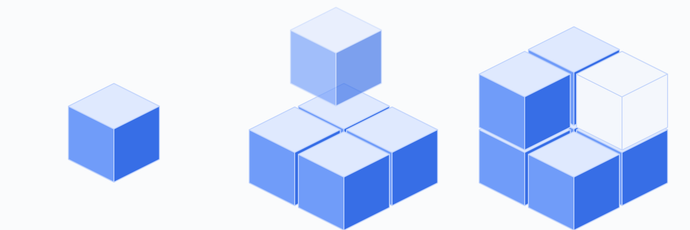

Cloakyard


See the landing animation frames

Each row starts with the current mark. Compare the designs at header size (36 px) and tab size (16 px).



Framed landscape


Choose a design and lift away its layers.